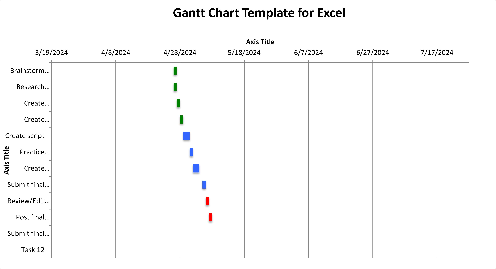
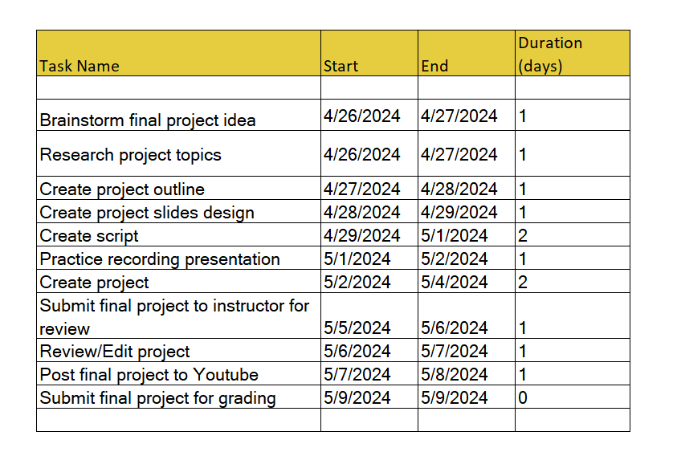

Final Project idea: Here is the plan Gantt chart of my final project  and image  For my final project, I plan to create a comprehensive video tutorial focusing on Internet Fundamentals, with a specific emphasis on web browsers. The video will cover everything from basic browser functionality to advanced customization options and security features. To improve browsing and solve typical problems, I'll offer helpful hints and techniques. Regardless of their level of expertise, the project aims to give viewers the information and abilities they need to maximize their online surfing. Session 15 Internet Fundamentals/Project Management Through the project management activities in Session 15, I gained insights into the importance of thorough planning, effective execution, and diligent monitoring in managing IT projects. Utilizing project management software enhanced my understanding of organizing tasks, allocating resources, and tracking progress. These learnings will enable me to ensure efficient project management and successful outcomes in my current or future professional roles.